デジタルイラストで使うレイヤーの描画モードの効果を画像で検証 2013年9月1日 Category デジタル Tag レイヤー描画モード 目次 色補正ツールによるレイヤーの加工 レイヤーの描画モード 調整レイヤーを使ったフィルターのかけ方は3種類 http://www.oekaki-hoho-ron.com/how-to-use-the-layer-blending-mode/index.html デジタルイラストで使うレイヤーの描画モードの効果を画像で検証 色補正ツールによるレイヤーの加工 CGソフトには必ずといっていいほど色補正機能が搭載されています。色補正ツールは使い方次第では画像の色を思い通りに調整できます。それ自体が色の調和を持たらすこともありますが、レイヤーモードと併用することでもっと複雑な調整が可能になります。 このように、色を調整したレイヤーを何かしらのレイヤーモードで合成する作業は、まるで元の画像に色付きフィルムを被せているみたいということで、このような色を調整するCG処理をフィルターと呼んでいます、と思います。詳しくは調べてませんが。そして、そのときに被せるものを調整レイヤーといいます。というわけで調整レイヤーを作成するためにはレイヤーの描画モードと色補正ツールの使い方を知っておくべきなので一通りリストアップします。まずは色補正ツールから説明します。 ちなみに、サンプルとして載せてある操作画面はPixelmatorというCGソフトのものです。画像編集においてかなり優秀なソフトなので愛用しています。どのCGソフトも同じような機能を持っていると思うので、自分が使っているCGソフトと照らし合わせながら考えてみてください。また、各機能の使用例としてレインボーのグラデーション画像に色補正をかけたサンプル画像も載せています。 トーンの差による配色パターン 分類 色補正ツール 説明 ウィンドウ 例 色相 色相 明度・彩度、そして全体の色相の相対関係を維持したまま色相を調整できる。 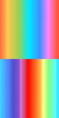色相を逆転 カラーの適用着色 全体を一つの色相に統一することができる。セピア調など、色付きフィルムを被せたような加工ができる。 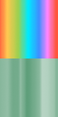色相を緑に統一 カラーバランス 全体の色のバランスを調整できる。 イエローを少なく チャンネル RGBチャンネルのうち特定の一つのチャンネルのみの色の強さを調整できる。 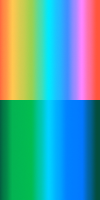RとGを0に 明度 レベル補正 輝度の明暗の最大値の範囲を調整して、指定した範囲外の画素は切り捨てることができる。また、輝度分布の高い範囲を調整してコントラストや明度の調整ができる。 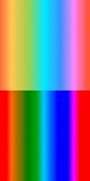レベルを強める トーンカーブ 輝度分布を曲線で調整できる。コントラストや明度を調整できる。 高明度と低迷度の範囲を強く 明るさ・コントラスト 現時点でのバランスを維持したまま全体の明度（輝度）とコントラストを調整できる。 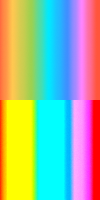コントラストを強く 露光量 露光量とはカメラで撮影するときに光を取り入れる量のことです。例えば夜空を撮影するときにはシャッターを開きっぱなしにして、より多くの光を集めることで小さな星を写真に収めます。露光量が多いほど明るくなります。輝度補正と動作が似ていますが、輝度補正は全体を同じ量だけ明度調整するのに対し、露光量は明るい画素ほど明るくなります。つまり変化量=光量×時間ということです。 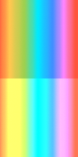露出を増やして明るく シャドウ・ハイライト 明度が高い部分と低い部分に個別に調整を加えられる。 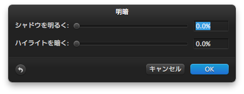 シャドウを明るく 彩度 白黒脱色 彩度を0にしてモノクロにできる。結果は色相の固有明度となる。 彩度を0に 彩度 全体の彩度を調整できる。 彩度を低く レイヤーの描画モード レイヤーモードは、各レイヤーの画素が持っている値同士を使って演算した結果を出力する機能です。これぞフィルターの要となる機能なので熟知しておく必要があります。レイヤーモードについて一通りリストアップして説明しますが、得られる効果によって6種類に分類しています。 結果が明るくなったり暗くなったりするレイヤーモードは空気感の演出に向いており、コントラストが強まるモードは質感を加味することに向いています。単純に四則演算を行うモードでは自分で効果を予測して応用しやすいですし、色相・明度・彩度を使ったモードはそれぞれの値を固定させて手描きで色を塗る作業の手助けになったりします。そういった実例は今回は置いといて紹介だけにとどめます。 下の覧表にある演算式はGIMPのオンラインマニュアルから引用しています。つまりGIMPに限った演算式なので、使うCGソフトによって結果が多少異なる可能性があります。もちろん異ならない可能性もありますが。ただ、レイヤーモードの意味を理解するには参考になるので数式を凝視して考えてみてください。 そして各レイヤーモードを使って合成した例として、背景画像（I）の上にマスク画像（M）を合成した画像を載せています。レイヤーモードは色相・明度・彩度によって様々な結果を持たらすので、観察しやすいようにレインボーの背景画像に、主な色として赤黄緑青白黒のマスク画像を合成した例を用いています。これらも同様にPixelmatorによる合成です。 トーンの差による配色パターン 分類 レイヤーモード 演算式 説明 例 合成なし 通常 言うまでもなく上からMの値を上書きするモードです。 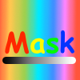 ディゾルブ - まず初めにディザー効果とは、ある決められた階調でより豊富な階調を表現する技法。たとえば、白と黒しか使えない状態でさまざまな濃さの灰色を表現する方法です。要するにディスプレイのカラーマネージメントシステムが乏しい時代に色の表現力を高めるための技法です。結果はランダムにドットが抽出されてノイズのようになります。使い道は限られるでしょう。 暗くなる 比較（暗） M, Iのうち明度の低い画素を適用する。 乗算 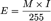 M, Iともに最も明るい255でも計算結果は255になる。つまり白より暗い色の画素を合成した場合は全て暗くなる。 焼き込み（カラー） 焼き込みとは、アナログの写真を暗室で現像するときに露出を高めてより強く像を焼き付ける作業で、それを再現できるのが焼き込みです。Mが暗いと分母が小さくなるので結果が明るくなる。また、Iが暗いと分子が大きくなるので結果が明るくなる。 焼き込み（リニア） - ? 焼き込み（ソフト） - ? 明るくなる 比較（明） M, Iのうち明度の高い画素を適用する。 スクリーン M, Iともに明るいほど分子が小さくなるので、結果が暗くなる。白マスクで黒くなり、黒マスクで変化なし。彩度は低く、明度は高くなる。ちなみにM, Iの上下関係は問わない。 覆い焼き（カラー） 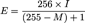 覆い焼きとは、アナログの写真を暗室で現像するときに露出を抑えるためにマスクで覆って、焼き込み量を減らす作業です。Mが暗いと分母が大きくなるので結果が暗くなる。また、Iが暗いと分子が小さくなるので結果が暗くなる。 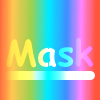 覆い焼き（リニア） - ? 覆い焼き（ソフト） - ? コントラスト オーバーレイ オーバーレイとは「〜の上に被せる」という意味です。画像の上に何か被せると普通は暗くなるので、同じようにオーバーレイの結果は暗くなります。乗算に似た結果になりますが、演算式を見ると乗算は明るさが反比例するのに対し、オーバーレイはもっと複雑な演算を行ってコントラストが強くなる結果になります。画面の存在感が弱いなと思ったときに豊かな質感を与えることができます。 ソフトライト オーバーレイに似た結果になる。演算式の中のRsというのはスクリーンモードの結果値のことです。 ハードライト 明度51%以上でスクリーン、50%未満で乗算が適用される、という解釈らしい...。 ビビッドライト - ? 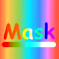 リニアライト - ? ピンライト - ? ハードミックス - ? 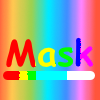 単純な計算 差の絶対値 MとIの差の絶対値の色になる。何かに使えそうだけど今は分からない。画像を部分的に反転させるらしい。 除外 - ? 加算 IにMの値を加算するので、白のマスクでは白くなり、黒のマスクでは変化なし。 減算 IからMの値を減算するので、白のマスクでは変化なく、黒のマスクで黒くなる。 除算 Mが255より暗いと分母が小さくなるため結果値が大きくなる。つまり黒いマスクで明るくなり、白いマスクで変化なしとなる。 色補正 色合い・色相 - Mの色相、Iの彩度と明度を適用。Mの彩度が0のときにIの色相を使う。 彩度 - Mの彩度、Iの色相と明度を適用。 カラー・色 - Mの色相、Iの明度を適用。つまり上のレイヤーの色相・彩度と、下のレイヤーの明度を持った色になる。このときIはグレースケール画像でも明度を持っているのでかまわない。 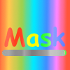 輝度・明度 - Mの明度、Iの彩度を適用。彩度を変更せずに暗部や明部を明らかにできる。 自分でまとめといて何ですが、これはいい一覧表ができたなと。今まで乗算とスクリーンくらいしか理解していなかったので、これを期にもっとレイヤーモードと仲良くなろうと思いました。ひたすら紹介するのはこれで終わりなので次のページにどうぞ。 調整レイヤーを使ったフィルターのかけ方は3種類 ではではイラストの色を調和させるテクニックについて考えていきたいところですが、その前に調整レイヤーを使ったフィルターによって得ようとしている調和とはどういうことなのか再確認しておきます。人間が調和しているなと感じる配色はほとんどの場合が自然的な雰囲気を持っています。そのため、作り物のイラストの無機的な配色を有機的なものにしようとして複雑なフィルターをかけて画面を軟らかくします。軟らかくするというのは、隣り合う色が突然かけ離れた色相・明度・彩度に飛ばないようにグラデーションで馴染ませることだと思います。そうして、各パーツの色を近しいトーンに調整して馴染ませたり、ぼかしをかけたときの空気感を利用して空間を演出して説得力を与えたりします。 ここで、配色の馴染ませ方を3種類に分類しようと思います。一つ目は、各パーツの色を調整するもの。二つ目は、ぼかしをかけたりして空気感を出して調整するもの。三つ目は、色の配置から得られる知覚的要因によって調整するもので、つまりアクセントカラーを使った調整。これら3種類の使い方がある事を頭に入れて、フィルターをかけるための調整レイヤーの作り方を下図を使って考えていきます。 まず一つ目、各パーツの色を調整する方法から。現実世界で色を認識するとき、その色は必ず環境光の色味に近づいて見えています。例えば薄暗い環境では暗いトーンの色に見えるし、キャンプファイヤーの前では暖色に染まって見えます。つまり各パーツの色を調整するといことは、あるトーンに近づけるように調整するということです。具体的に言うと、トーンを調整するので色相をいじる必要はなく、明度と彩度を微調整できる調整レイヤーを作るように工夫していきます。 二つ目のぼかしをかけたりして空気感を出して調整する方法について。これは一つ目の方法と同様に環境光の影響を再現しようというものです。ただ一つ目と違うのは、環境光の影響を受けた色を再現するのではなく、環境光の影響そのものを再現するところです。だから、元の画像にぼかしをかけたレイヤーをうっすらと合成したり、全体を環境光のトーンで塗りつぶしたレイヤーを調整レイヤーとして被せたりと、元の画像に対してエフェクトを加えるという方法をとります。...下図の例ですが、さすがに風景写真に色の三原色を空気感だけで馴染ませろというのはハードルが高かったな。こう考えると、この方法は相容れない色の組み合わせを色補正で馴染ませるというより、ある程度馴染んでいるイラストをさらに質感を与えて馴染ませるという感じかも知れません。下図のような元々相容れない色同士は空気感だけでは馴染みません。 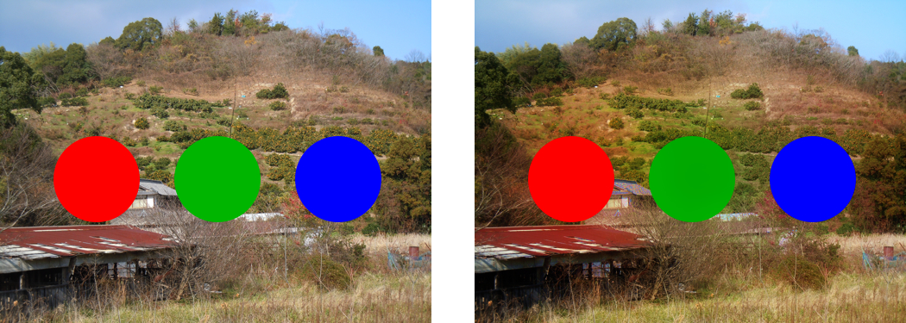 三つ目の知覚的要因による調整というのはあまり厳密な言い方ではありませんが、一応は色彩理論に関係がありそうなので挙げました。上で言っていたアクセントカラーというのは、地味な配色の中に鮮やかな赤があると映えて視線誘導する効果などを与えるものです。その他には、近いトーンの色が隣り合っていると境目が分かりにくいというときに、境界線を目立つ色で描いたりするセパレーションというのもあります。このように意図的に不自然な色を使って目的の演出をする、という意味で知覚的要因を使うと言っています。具体的な方法は、例えばアクセントカラーにする部分以外の色の彩度が下がるような調整レイヤーを作るなどが考えられます。もっとリアルなイラストでの例は思いつきませんが、まあこんな感じです。この例はちょっと違う気がしますがとりあえず参考に。 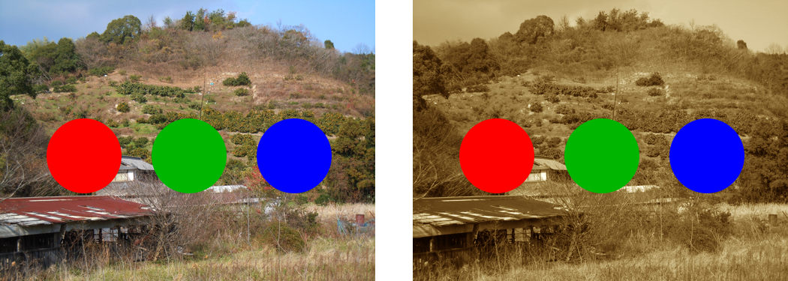 本当は実演もやろうと思ってましたがCGソフトの機能の紹介だけでかなりの長さになってしまいました。次回の記事で調整レイヤーのメイキングをやろうと思います。 http://www.oekaki-hoho-ron.com/how-to-use-the-layer-blending-mode/index.html デジタルイラストで使うレイヤーの描画モードの効果を画像で検証 次の記事 前の記事